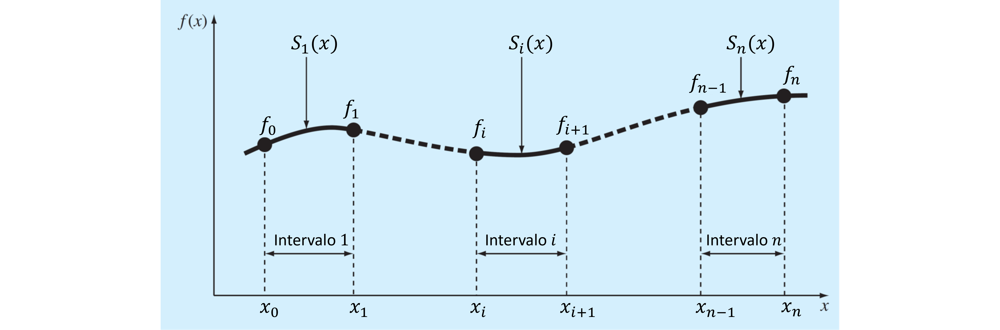

Métodos de Interpolación
Contents
4. Métodos de Interpolación#
4.1. Introducción#
La siguiente tabla muestra las propiedades del agua en función de la temperatura.

En ingeniería generalmente debemos utilizar estas tablas. Si quisieramos determinar, por ejemplo, el valor de la densidad a \(10\mathrm{^oC}\) necesitaríamos conocer la función \(\rho(T)\), ya que el valor no está en la tabla.
¿Cuál es la función más adecuada para representar la densidad?
A diferencia de nuestro problema de ajuste por mínimos cuadrados, en este caso cada valor de la tabla es certero. Es decir, nuestra función debe pasar estrictamente por cada valor indicado en la tabla.
Llamamos a esta función, función de interpolación y en esa clase revisaremos diferentes métodos para generarla.
4.2. Interpolación Polinomial#
Este método consiste en determinar una único polinomio de interpolación que pase por todos los puntos tabulados.
Matemáticamente, se puede demostrar que para una série de \(n+1\) valores tabulados (\(x_i, y_i\) con \(i = 0,1,\cdots), n\), existe un único polinomio de grado \(n\):
que pasa por todos los \(x_i, y_i\).
La forma más intuitiva para encontrar los coeficientes es formar “\(n+1\)” ecuaciones considerando la intersección con los \(n+1\) datos. Sin embargo, este método no es eficiente.
Por esta razón, se han desarrollado múltiples métodos para encontrar el polinomio de forma eficiente (polinomios de Newton, Lagrange, etc).
4.2.1. Polinomio de Interpolación mediante numpy.polyfit#
En python, la forma más simple de generar un polinomio de interpolación es mediante polyfit.
Estrictamente hablando, polyfit es un método de regresión lineal y, por lo tanto, no está clasificado como método de interpolación. Sin embargo, es importante entender que ajustar un polinomio de grado \(n\) con un set de \(n+1\) datos tabulados, es equivalente a resolver un sistema de \(n\) ecuaciones lineales con \(n\) incognitas (solución exacta).
Por ejemplo, consideremos el polinomio de ajuste para la muestra:
# Datos de la muestra xi, yi
xi = np.array([-5.0, -2.0, 0.5, 3.0, 5.0])
yi = np.array([-2.0, -0.1, 2.0, 1.0,-1.0])
Generaremos un polinomio de grado 2 (\(y= a_0 + a_1x + a_2x^2\)) mediante polyfit, considerando dos casos:
Todos los datos tabulados (ajuste por mínimos cuadrados).
# polinomio de ajuste
ai = np.polyfit(xi,yi,2)
Solo los datos \(\{x_0,y_0\}\); \(\{x_2,y_2\}\) y \(\{x_4,y_4\}\)
# polinomio de interpolación
ai = np.polyfit([xi[0], xi[2], xi[4]],[yi[0], yi[2], yi[4]],2)
%%capture showplot
import matplotlib.pyplot as plt
import numpy as np
# Datos de la muestra xi, yi
xi = np.array([-5.0, -2.0, 0.5, 3.0, 5.0])
yi = np.array([-2.0, -0.1, 2.0, 1.0,-1.0])
x = np.linspace(-5, 5, 100) # arreglo en x para graficar
# polinomio de ajuste grado 2
ai = np.polyfit(xi,yi,2)
y_fit = np.polyval(ai,x)
# polinomio de interpolación grado 2
ai = np.polyfit([xi[0], xi[2], xi[4]],
[yi[0], yi[2], yi[4]],
2)
y_pol = np.polyval(ai,x)
plt.figure(figsize = (6, 5)) # Tamaño de figura
plt.rcParams.update({'font.size': 10}) # Tamaño de fuente
# ploteamos los dos polinomios
plt.plot(x, y_fit, '--k',label='modelo de ajuste')
plt.plot(x, y_pol, 'b', label='interpolación')
# ploteamos xi, yi
plt.plot(xi, yi, 'ro',label='_datos $(x_i, y_i)$')
plt.title('Polinomio grado 2 por mínimos cuadrados')
plt.xlabel('x')
plt.ylabel('y')
plt.grid()
plt.legend(frameon=False)
plt.show()
showplot()
Notar como la curva azul pasa exáctamente por los puntos \(\{x_i, y_i\} = \{-5.0, -2.0\}\), \(\{0.5, 2.0\}\) y \(\{5.0, -1.0\}\)
4.2.2. Problemas de oscilación en interpolación polinomial#
Un problema de los polinomios de interpolación es que sufren problemas de oscilación a medida que aumenta el número de datos en la muestra.
Este problema se conoce como el fenómeno de Runge, en referencia a Carl Runge, quién en 1901 demostró el mal condicionamiento de los polinomios de interpolación cuando se analizaba la siguiente función:
Esta función se conoce como función de Runge
Analicemos este problema considerando el dominio \(x\in\left[-1,1\right]\). Utilizando polinomios de interpolación de grado 5, \(p_5(x)\) y grado 7, \(p_7(x)\), generados por polyfit.
import numpy as np
# generamos la funcion Runge
f = lambda x: 1/(1+25*x**2)
# Polinomio con 5 datos igualmente espaciados
xi5 = np.linspace(-1,1,5) # xi
yi5 = f(xi5) # yi
p4 = np.polyfit(xi5,yi5,len(xi5)-1) # coeficientes del polinomio de interpolación
# Polinomio con 7 datos igualmente espaciados
xi7 = np.linspace(-1,1,7) # xi
yi7 = f(xi7) # yi
p6 = np.polyfit(xi7,yi7,len(xi7)-1) # coeficientes del polinomio de interpolación
Graficamos el resultado
%%capture showplot1
import matplotlib.pyplot as plt
plt.figure(figsize = (6, 5)) # Tamaño de figura
plt.rcParams.update({'font.size': 10}) # Tamaño de fuente
# arreglo para plotear
x = np.linspace(-1,1,100)
# ploteamos la función de Runge
plt.plot(x,f(x),'--k', label='Runge')
# ploteamos los polinomios de Lagrange
plt.plot(x, np.polyval(p4,x), 'r',label='polinomio grado 4')
plt.plot(x, np.polyval(p6,x), 'b',label='polinomio grado 6')
# ploteamos los xi, yi
# ! usamos '_' al comienzo del label para suprimir el output en "legend"
plt.plot(xi5, yi5, 'ro',label='_$x_i, y_i$ para $P_4(x)$')
plt.plot(xi7, yi7, 'bo',label='_$x_i, y_i$ para $P_6(x)$')
plt.title('Problema de oscilación por interpolación')
plt.xlabel('x')
plt.ylabel('y')
plt.grid()
plt.legend(frameon=False)
plt.show()
showplot1()
4.3. Interpolación por tramos (piecewise polynomial)#
Este es el método más confiable para evitar los problemas de oscilación, y el más utilizado en la actualidad
En este caso, para un set de \(n+1\) datos \(\{x_i, y_i\}\), con \(i = 0,1,...,n\), el método de interpolación por tramos consiste en contruir \(n\) polinomios de interpolación para los \(n\) intervalos interiores.
{kind=link}
4.3.1. Interpolación lineal (numpy.interp)#
El método de interpolación lineal consiste en construir \(n\) rectas \(\hat{y}_i(x)\), cada una definida entre dos puntos \(\{x_i, y_i\}\) y \(\{x_{i+1}, y_{i+1}\}\) de la forma:
En python, esta función esta implementada en numpy.interp (ver documentación acá).
import numpy as np
# datos tabulados
xi = [0, 1, 2] # xi
yi = [1, 3, 2] # yi
x0 = 1.5# valor x para determinar
y0 = np.interp(x0, xi, yi) # interpolamos y(x) en x0 = 1.5
#print('y0 = y(x0 = 1.5) =',y0)
y0
2.5
Podemos crear una función de interpolación lineal usando funciones lambda y numpy interp. Esto nos permite llamar al polinomio múltiples veces, sin tener que ingresar los datos tabulados repetitivamente.
# datos tabulados
xi = [0, 1, 2] # xi
yi = [1, 3, 2] # yi
y = lambda x: np.interp(x, xi, yi) # función de interpolación lineal
y(0.3) # x = 0.3
1.6
y(0.5) # x = 0.5
2.0
x = np.array([0.3, 0.5, 0.8]) # arreglo de datos
y(x)
array([1.6, 2. , 2.6])
Este método es útil para graficar.
%%capture showplot2
import matplotlib.pyplot as plt
import numpy as np
plt.figure(figsize = (4, 3)) # Tamaño de figura
plt.rcParams.update({'font.size': 10}) # Tamaño de fuente
# generamos datos para graficar y función de interpolación
x = np.linspace(0,2.0,100) # 100 puntos entre 0 y 2
plt.plot(x, y(x), '-b', label='$y(x)$') # graficamos la función
plt.plot(xi, yi, 'ob') # graficamos los xi, yi
plt.plot(1.5, y(1.5), 'or', label='$y(x_0 = 1.5)$') # graficamos y(1.5)
plt.title('Interpolación lineal (interp1d de scipy)')
plt.xlabel('x')
plt.ylabel('y')
plt.grid()
plt.legend(frameon=False)
plt.show()
showplot2()

Por defecto, numpy.interp entregará los valores extremos cuando intentemos extrapolar.
%%capture showplot3
import matplotlib.pyplot as plt
import numpy as np
plt.figure(figsize = (4, 3)) # Tamaño de figura
plt.rcParams.update({'font.size': 10}) # Tamaño de fuente
# generamos datos para graficar y función de interpolación
x = np.linspace(-1,3,100) # 100 puntos entre 0 y 2
plt.plot(x, y(x), '-b', label='$y(x)$') # graficamos la función
plt.plot(xi, yi, 'ob') # graficamos los xi, yi
plt.plot(1.5, y(1.5), 'or', label='$y(x_0 = 1.5)$') # graficamos y(1.5)
plt.title('Interpolación lineal (interp1d de scipy)')
plt.xlabel('x')
plt.ylabel('y')
plt.grid()
plt.legend(frameon=False)
plt.show()
showplot3()
4.3.2. Spline cúbico (scipy.interpolate.CubicSpline)#
El spline cúbico consiste en generar una función de interpolación basado en una serie de polinomios cúbicos \(S_i(x) = a_i x^3 + b_i x^2 + c_i x + d_i\), cada uno definido en el tramo \(x\in\left[x_i, x_{i+1}\right]\)
Para encontrar la función de interpolación debemos determinar los coecientes \(a_i, b_i, c_i, d_i\) de cada \(S_i(x)\).
Para una serie de \(n+1\) datos tabulados \(\{x_i, y_i\}\), con \(i = 0,1,...,n\), se necesitan \(n\) polinomios \(S_i(x)\). Esto nos da un total de \(4n\) incognitas y, por lo tanto, necesitamos de \(4n\) ecuaciones linealmente independientes.
Primero, cada polinomio \(S_i(x)\) debe intersectar los valores extremos del domino en el que está definido. En otras palabras:
esto nos da un total de \(2n\) ecuaciones linealmente independientes
Para asegurar una unión suave entre cada tramo, imponemos como condición que la primera y segunda derivada entre dos polinomios sean iguales en los nodos centrales. Matemáticamente.
lo que nos da un total de \(2(n - 1)\) ecuaciones linealmente independientes.
Las últimas dos ecuaciones se determinan por las condiciones de borde en los extremos \(y(x_0)\), \(y(x_n)\). Tenemos distintas alternativas:
Not a knot. Imponemos una condición para la tercera derivada en los extremos, de manera que \(S_1'''(x_1) = S_2'''(x_1)\) y \(S_{n-1}'''(x_{n-1}) = S_n'''(x_{n-1})\)
Clamped. La primera derivada en los extremos, \(S_1'(x_0) = S_n'(x_n) = 0\)
Natural. La segunda derivada en los extremos, \(S_1''(x_0) = S_n''(x_n) = 0\)
Periodic. Se usume una función periódica, de manera que \(S_1'(x_0) = S_n'(x_n)\), y \(S_1''(x_0) = S_n''(x_n)\). Solo válida para funciones periodicas, es decir cuando \(y(x_0) = y(x_n)\).
En python, interpolación cúbica está implementada a través de la función CubicSpline del módulo interpolate de la librería scipy (ver documentación).
CubicSpline, por defecto, genera una función de interpolación a partir de la muestra \(x_i, y_i\)
from scipy.interpolate import CubicSpline
y = CubicSpline(xi,yi) # Genera una función y(x)
Podemos controlar las condiciones de borde mediante un tercer argumento bc_type:
from scipy.interpolate import CubicSpline
y = CubicSpline(xi,yi,bc_type='not-a-knot') # Condición de borde not a knot
y = CubicSpline(xi,yi,bc_type='periodic') # Condición de borde periodica
y = CubicSpline(xi,yi,bc_type='clamped') # Condición de borde "clamped"
y = CubicSpline(xi,yi,bc_type='natural') # Condición de borde"natural"
También podemos usar bc_type para especificar el valor de las derivadas en los extremos:
# Primera derivada = 0.5 en los extremos"
y = CubicSpline(xi,yi,bc_type=((1, 0.5), (1, 0.5)))
# Segunda derivada = 0.5 en los extremos"
y = CubicSpline(xi,yi,bc_type=((2, 0.5), (2, 0.5)) )
Particularmente, la instrucción:
bc_type=((1, 0.0), (1, 0.0))es equivalente aclamped, ybc_type=((2, 0.0), (2, 0.0))es equivalente anatural.
Por defecto, CubicSplineasume bc_type='not-a-knot'
Analicemos el comportamiento de las condiciones de borde not-a-knot, clampedy spline en la interpolación spline de los datos \(x_i\) = [3, 5, 7, 9], \(y_i\) = [2.5, 1.5, 2.0, 1.8]
from scipy.interpolate import CubicSpline
import numpy as np
xi = np.array([ 3, 5, 7, 9])
yi = np.array([2.5, 1.5, 2.0, 1.8])
# Generamos 3 funciones de interpolación "spline" con distintas condiciones de borde
y_1 = CubicSpline(xi,yi,bc_type='not-a-knot')
y_2 = CubicSpline(xi,yi,bc_type='clamped')
y_3 = CubicSpline(xi,yi,bc_type='natural')
y_1(15)
array(-25.)
%%capture showplot4
import matplotlib.pyplot as plt
import numpy as np
plt.figure(figsize = (4, 3)) # Tamaño de figura
plt.rcParams.update({'font.size': 10}) # Tamaño de fuente
x = np.linspace(2,10,100) # variable para graficarS
plt.plot(xi, yi, 'ko') # graficamos los xi, yi
plt.plot(x, y_1(x), '-b', label='not-a-knot') # graficamos la función
plt.plot(x, y_2(x), '-r', label='clamped') # graficamos la función
plt.plot(x, y_3(x), '-g', label='natural') # graficamos la función
plt.title('Interpolación spline')
plt.xlabel('x')
plt.ylabel('y')
plt.grid()
plt.legend(frameon=False)
plt.show()
showplot4()
CubicSpline además nos permite determinar las derivadas de la función de interpolación. Para esto, debemos incluir un índice en el segundo argumento de la función generada:
from scipy.interpolate import CubicSpline
y = CubicSpline(xi,yi) # Generamos la función de interpolación
# Derivadas
y(x,1) # Primera derivada
y(x,2) # Segunda derivada
y(x,3) # Tercera derivada
Debido a que CubicSpline está basada en un polinomio de interpolación cúbico, solo admite hasta la tercera derivada.
%%capture showplot5
from scipy.interpolate import CubicSpline
import matplotlib.pyplot as plt
import numpy as np
xi = np.linspace(-2*np.pi,2*np.pi,20)
yi = np.sin(xi)
# spline "not a knot"
y_1 = CubicSpline(xi,yi)
plt.figure(figsize = (6, 5)) # Tamaño de figura
plt.rcParams.update({'font.size': 10}) # Tamaño de fuente
x = np.linspace(-2*np.pi,2*np.pi,100) # arreglo para graficar
plt.plot(x, y_1(x), '--k',label=r"$y(x)$") # graficamos la función
plt.plot(x, y_1(x,1), '-b',label=r"$y'(x)$") # primera derivada
plt.plot(x, y_1(x,2), '-r',label=r"$y''(x)$") # segunda derivada
plt.plot(x, y_1(x,3), '-g',label=r"$y'''(x)$") # segunda derivada
plt.title('Derivadas interpolación spline')
plt.xlabel('x')
plt.ylabel('y')
plt.ylim(-2,2)
plt.grid()
plt.legend()
plt.show()
showplot5()
Por defecto, CubicSpline extrapola los valores fuera de los valores extremos. Podemos suprimir la extrapolación mediante la instrucción extrapolate=False. En este caso, la función entregará NaN para los valores extrapolados.
%%capture showplot6
from scipy.interpolate import CubicSpline
import matplotlib.pyplot as plt
import numpy as np
xi = np.array([ 3, 5, 7, 9])
yi = np.array([2.5, 1.5, 2.0, 1.8])
# spline "not a knot" sin extrapolación
y_1 = CubicSpline(xi,yi,extrapolate=False)
plt.figure(figsize = (4, 3)) # Tamaño de figura
plt.rcParams.update({'font.size': 10}) # Tamaño de fuente
x = np.linspace(2,10,100) # arreglo para graficar
plt.plot(xi, yi, 'ok') # graficamos los xi, yi
plt.plot(x, y_1(x), '-b') # graficamos la función
plt.title('Interpolación spline')
plt.xlabel('x')
plt.ylabel('y')
plt.grid()
plt.show()
showplot6()
4.4. Referencias#
Kong Q., Siauw T., Bayen A. M. Chapter 16: Interpolation in Python Programming and Numerical Methods – A Guide for Engineers and Scientists, 1st Ed., Academic Press, 2021
Chapra S., Canale R. Capítulo 18: Interpolación en Métodos Numéricos para Ingenieros, 6ta Ed., McGraw Hill, 2011